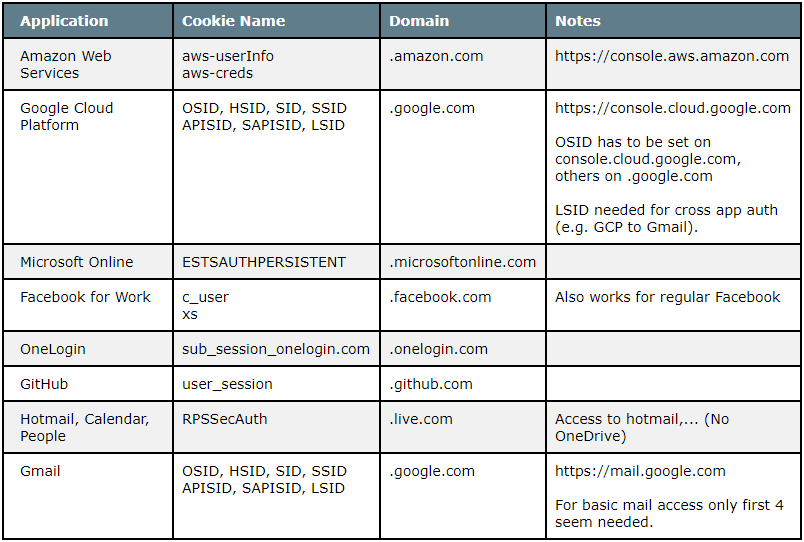

Below is a list of some "cookies of interest" for valuable web applications your organization might use. An adversary might be after those and you could emulate to see if your organization catches the attack. This list might change over time or have inaccuracies - feel to provide feedback or help amend.

Notice: When setting cookies through the web console, each cookie has to be set individually via document.cookie="". You can always view the currently set cookies via document.cookie
Also when setting cookies ensure to set them on the correct domain. If in doubt you can try setting them on the root domain.